интересные места Крыма
Эко гид
Проект создан с целью показать интересные и захватывающие места моего родного региона «Республики Крым». Оно будет интересно людям которые хотят узнать больше о своем регионе или приезжим которые хотят увидеть удивительные места региона.
Просмотр мест осуществляется благодаря наведению на маркер курсора мыши
Чтобы более подробно узнать об заинтересовавшей вас локации кликните по маркеру на карте.
Кара - Даг
Горно-вулканический массив на территории Феодосийского региона Крыма, на берегу Чёрного моря. Максимальная высота - 577 м. Название Карадаг переводится с урецкого и крымскотатарского языков на русский как «чёрная гора». Как сообщал «Географическо-статистический словарь Российской империи», на восточном склоне горы находятся развалины старинной армянской церкви, на территории которой имеется большое количество камней с армянскими надписями.
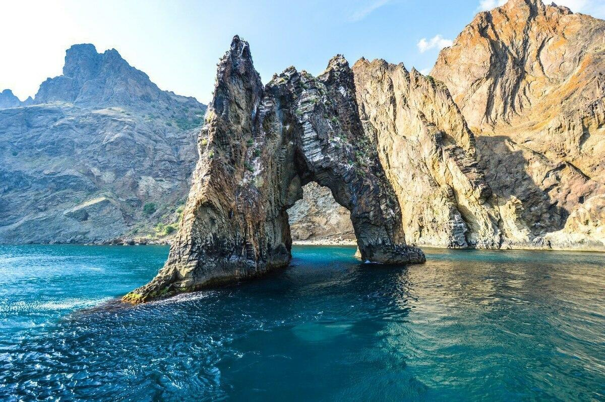Озеро Тобечик
Это один из самых крупных естественных водоемов полуострова, образованный из устья залива на побережье Черного моря. Залив медленно заполняла вода, а уровень моря падал. Появившийся перешеек со временем превратил его в озеро. От Черного моря озеро отделяет песчаная полоса шириной всего в 100 м. По другой версии, озеро создано руками человека. Появилась потребность в добыче соли. Часть залива моря была отделена песчаной косой, которая защищала озеро от морских волн.
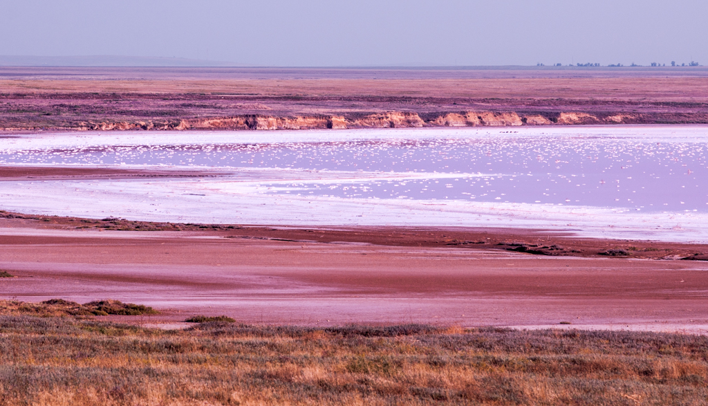Крымский «Прованс»
Побывать в Крымском «Провансе» можно примерно с середины июня по середину июля. И, хотя, лаванда в Крыму цветет все лето, основной сбор производится в июле месяце. Родина лаванды – горные районы Средиземноморья. На Крымском полуострове это эфиромасличное растение впервые появилось в 1813 году на территории Никитского Ботанического сада. А в 1928 году начали закладываться первые плантации для производства лавандового масла, применяемого в парфюмерии и медицине.

Мраморная пещера
Мраморная пещера входит в пятёрку самых красивых пещер мира, по оценкам современных спелеологов. Она находится на горном массиве Чатыр-Даг (нижнее плато) и имеет очень узкий вход. Спускаться в неё нужно по специальной лестнице, предварительно взяв с собой куртку, так как температура внутри не поднимается выше восьми градусов тепла. Глубина пещеры равна 60-ти метрам. Маршруты, которые оборудованы для экскурсий, имеют протяженность 1,5 километра.
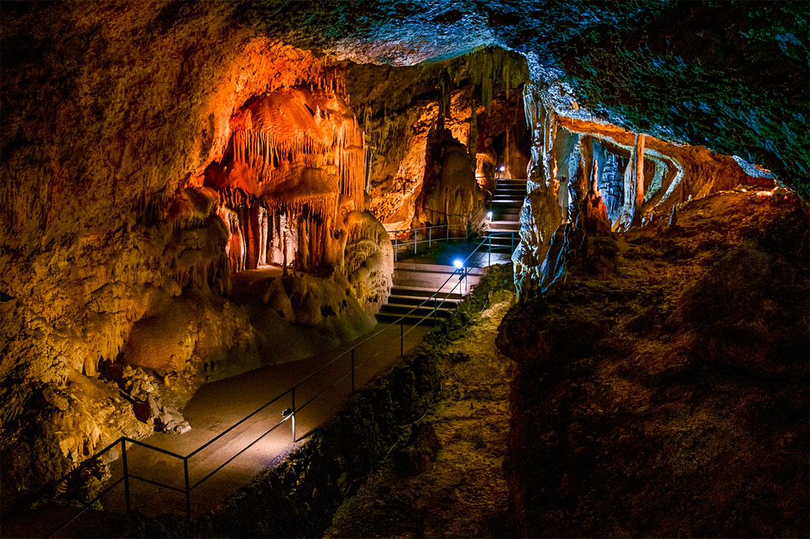Бакальская коса
Общая длина косы — около 12 км, из них примерно 5 км глубоко вдаются в акваторию Каркинитского залива Черного моря. В средней части ширина косы составляет порядка 30–50 м, а на севере коса сужается, переходя в мыс Песчаный. У основания косы располагается Бакальское озеро, которое часто пересыхает. Бакальская коса образовалась в результате многолетней работы штормовых волн и резких ветров, создавших естественную песчаную дамбу между бывшим Бакальским заливом и Черным морем. Это место с пологим берегом было популярно в качестве пляжа еще в позапрошлом веке, но потом о нем подзабыли и долгое время Бакальской косой интересовались лишь рыбаки.
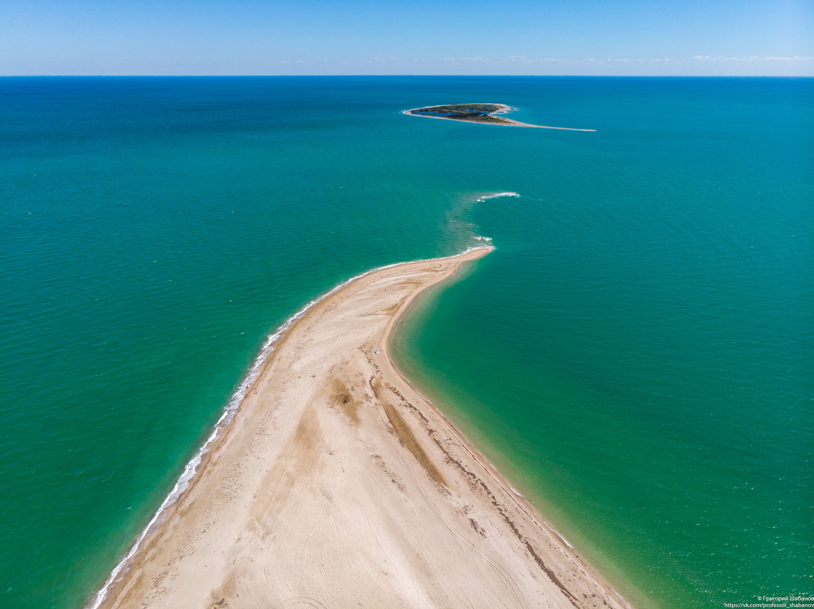Массандровский дворец
Массандровский дворец находится на территории Крымского полуострова, недалеко от города Ялты. Дворец начали строить в 1880-е годы для С. М. Воронцова — сына видного государственного деятеля того времени графа М. С. Воронцова, для которого был построен знаменитый Воронцовский дворец.
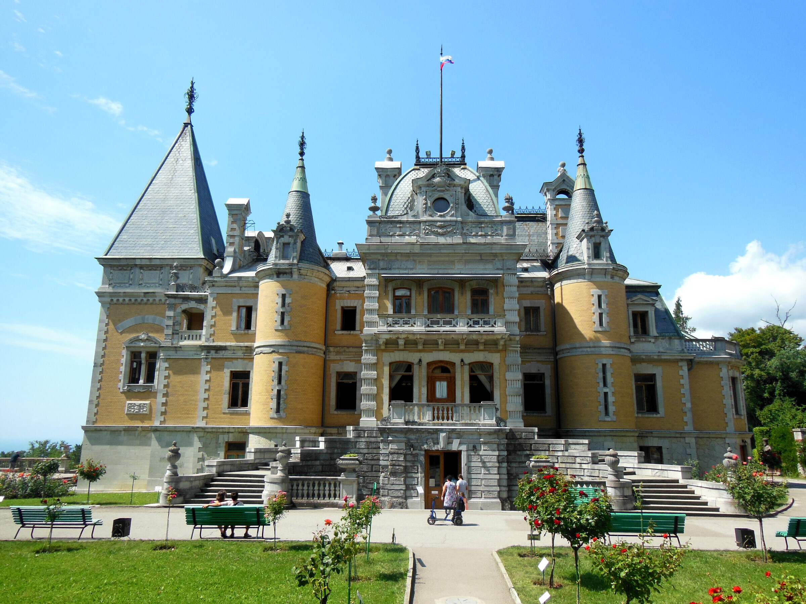Пляж «Майами»
На пляж «Майами» запросто можно ехать с детьми. Здесь есть батуты, горки с неглубокими надувными бассейнами. В пункте проката вы можете арендовать спасательный круг и жилет, чтобы поплавать вместе со своим ребенком. Рядом с пляжем есть шатер, где продают еду, напитки и разные мелочи. Там можно приобрести воздушного змея и запустить его прямо на берегу.
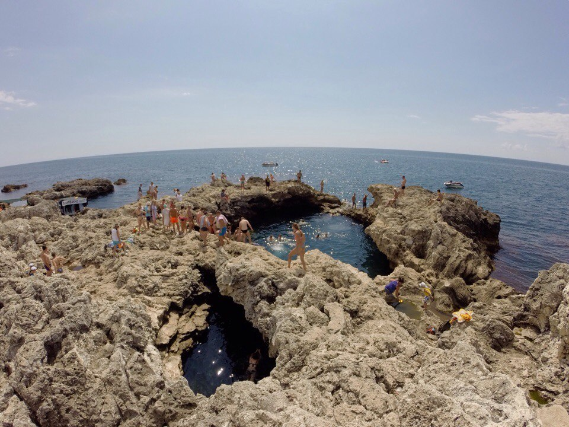Перекопская крепость
На территории Крыма расположено множество креп остей, защищающих полуостров с моря. Однако лишь одна защищала узкий перешеек, соединяющий его с материком. Крепость имеет сразу 3 названия: русские называют ее Перекопская крепость, турки — Ор-Капу, а татары Ферх Кермен («город радости»).
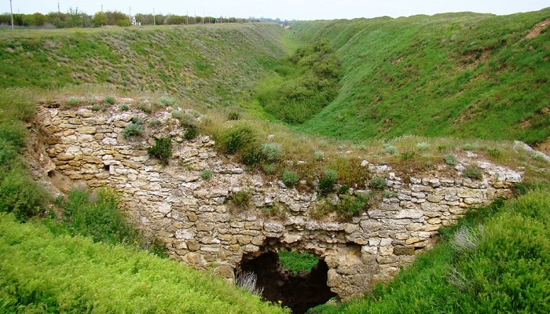Бухта Космонавтов
Понятие «бухта» в географической науке пользуется попул ярностью – специалисты знают тысячи подобных объектов. Но есть в этой группе и такие, что географов интересуют мало – в том числе и в Крыму. Бухта Космонавтов близ Щелкино перво очередно привлекает туристов-палаточиков и любителей «дикого» отдыха, но ученые при этом не берутся даже точно указать ее размеры.
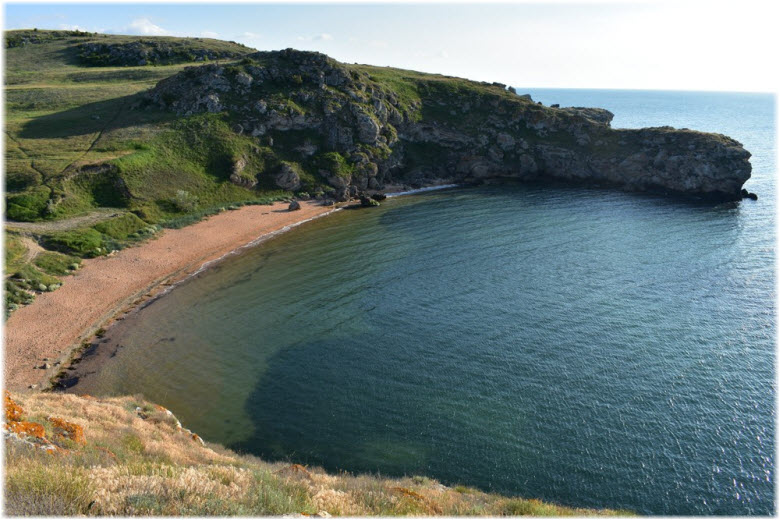Городище Киммерик
Сходство наименований иногда играет с людьми злые шутки. Так, поверхностные поклонники истории, плохо знающие Кры м, Киммерик полагают городом-памятником киммерийцев (с ко торыми они, впрочем, тоже знакомы исключительно по «Конану- варвару»). На деле городище ничего общего, кроме имени, с э тим народом не имеет. Оно основано переселенцами из Греции – много позже.
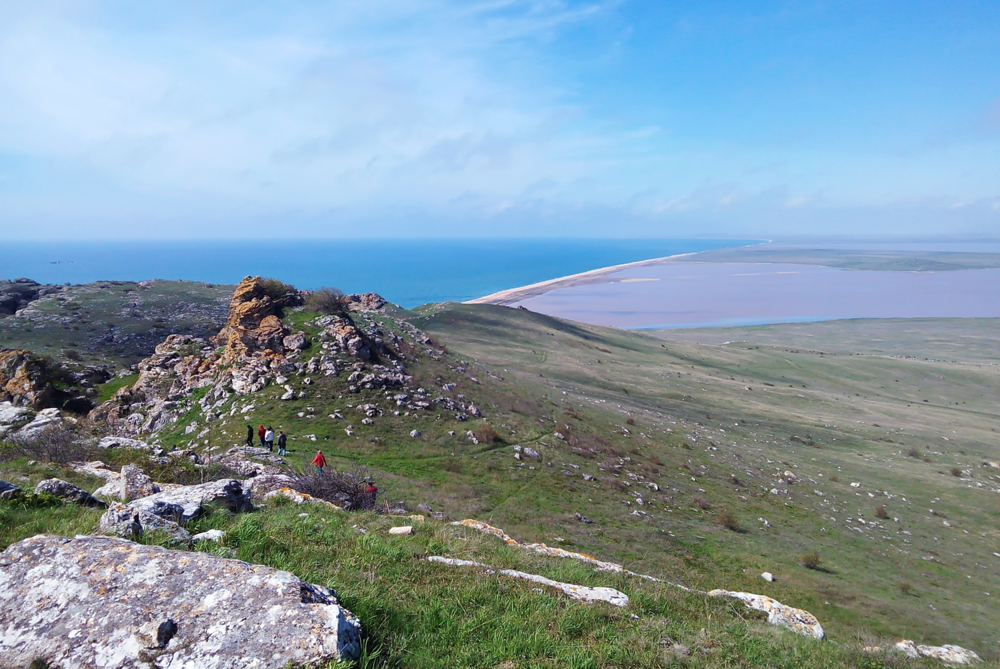Белая скала Ак-Кая
Отдельные крымские природные достопримечательности еще не стали по-настоящему «раскрученными», хотя заи нтересованному туристу они могут предложить довольно много. К их числу относится Белая скала Ак-Кая, Крым в концентрированном виде в некотором роде. Здесь есть все – богатая история, захватывающие легенды, красота природы, хитрости геологии.
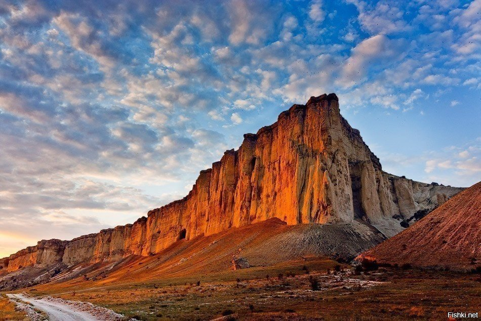Большой Атлеш
Полуостров Тарханкут вообще считается уникальным крымским природным уголком. Имя Атлеш носят два его мыса – соответ ственно, Большой и Малый, а также урочище между ними. Бере г тут почти отвесный, но сложен из мягких пород. За многие века вода и ветер придали им причудливую форму с «лестницами », гротами, пещерами и арками.
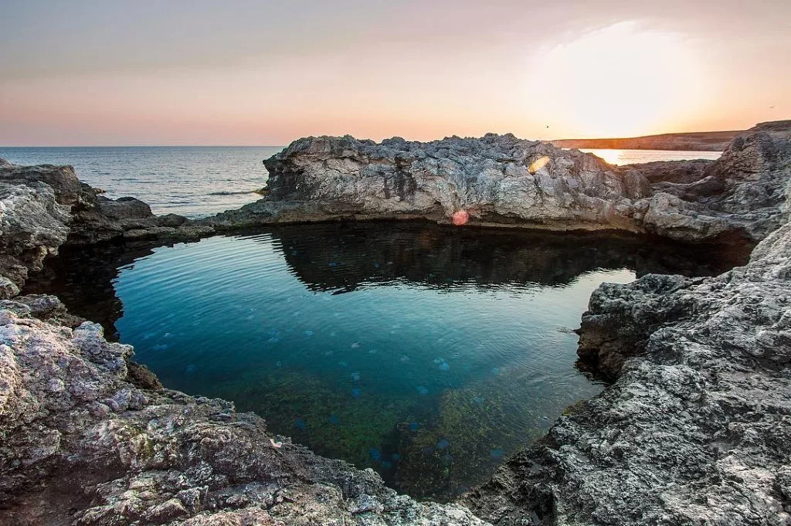Лебединое озеро
ЕЛебединое озеро в Алупкинском парке (который иногда называют Воронцовский парк) – одно из трех, соединенных меж собой озер парка. Учитывая, что Воронцовский парк состоит из двух условных парков, Лебединое озеро является достопримечательностью Верхнего парка. Сам парк был создан еще в начале XIX века. Главным руководителем проекта являлся Карл Кебах – опытный садовник из Германии.
Волчий грот
В начале позапрошлого века с легкой руки Н.М. Карамз ина в русской историографии поселилась «варяжская» те ория, объяснявшая развитие отечественных земель внешни м влиянием. Можно заподозрить, что именно под ее воздей ствием ученые, узнав о находках в Европе останков древне йших первобытных людей, решили, что на земле империи под обного быть не может, а Россия в свое время заселялась п ришельцами из Старого Света. Волчий грот в Крыму опроверг это предположение.
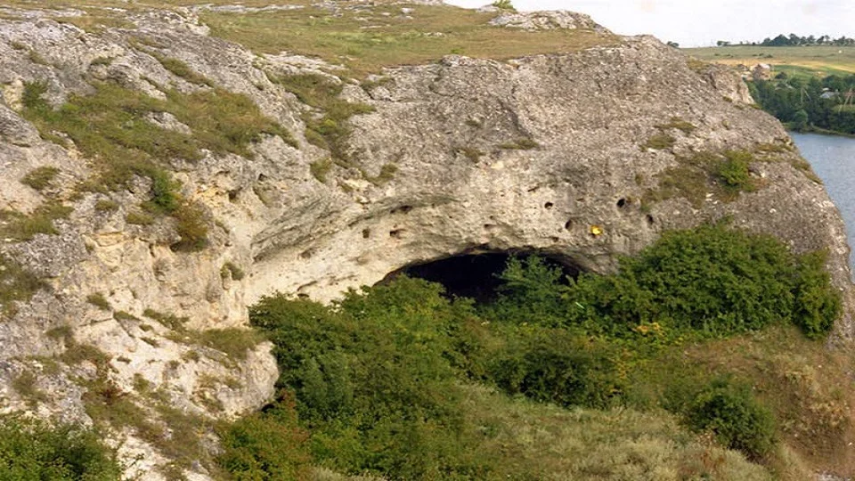Пещера Змеиная
Многие пещеры в Крыму давно превратились в своеобразные музеи с удобными мостками, билетными кассами и экскурсо водами. Но не все. На полуострове еще немало «подземных д ворцов», куда человек может попасть только на собственный страх и риск. Змеиная пещера у Симферополя общедоступна, а осмотреть ее можно, если проявлять благоразумие и осторожность.
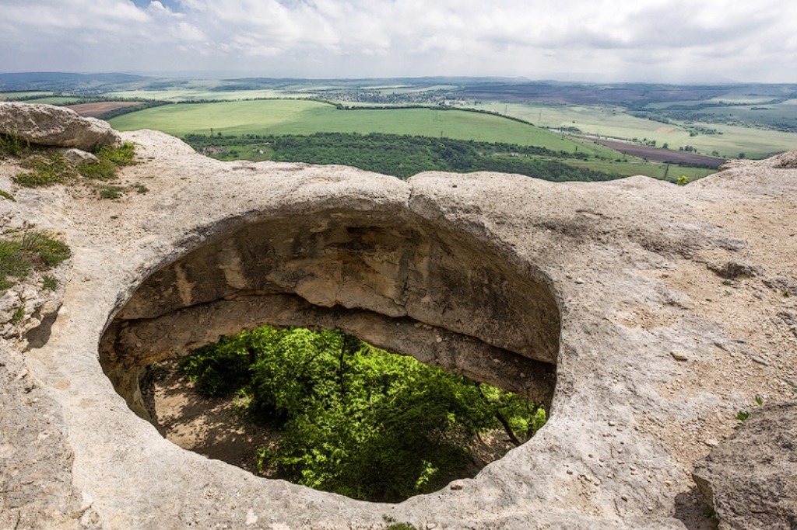